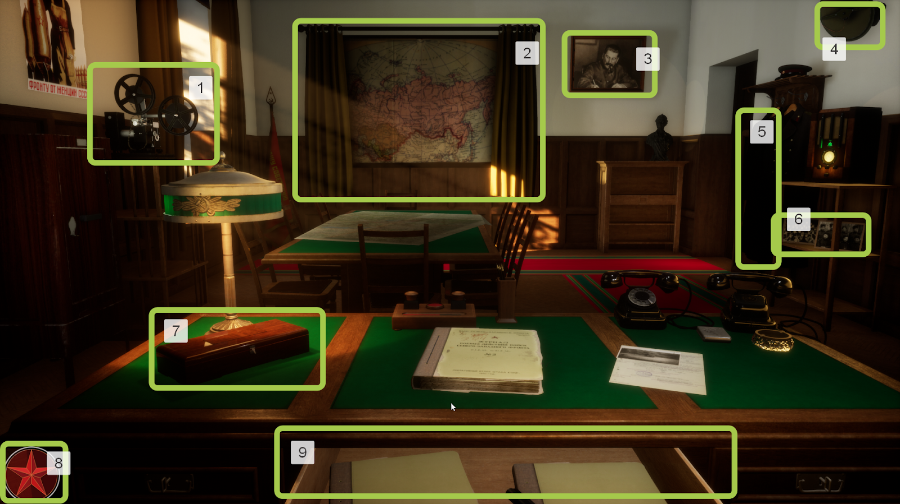
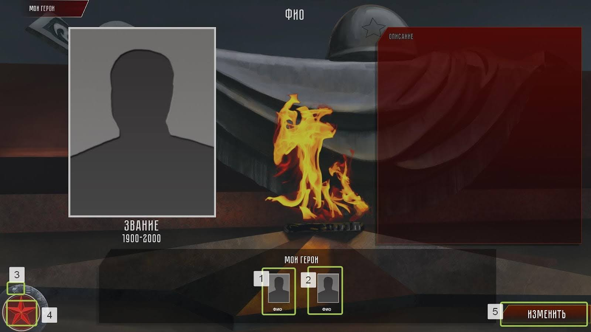

1 Главный экран
При входе на главный экран у вас открывается рабочий кабинет с интерактивными предметами, нажатие на которые позволяет открыть соответствующий раздел энциклопедии.

рис. 1.1 Главный экран
1 – Фото- и кинохроника
2 – Общий ход войны
3 – Исторические личности
4 – Совинформбюро
5 – Униформа
6 – Мои герои
7 – Ордена и медали
8 – Главное меню энциклопедии
9 – Техника и вооружение сторон
3 Разделы
3.1 Общий ход войны
рис. 3.1.1 Главный экран раздела “Общий ход войны”
1-31 – кнопки информации о странах
32 – панель управления (рис. 3.1.2)
33 – кнопка даты
34 – кнопка месяца
35 – кнопка года
36 – интерактивная панель хронологии общего хода войны
рис. 3.1.2 Панель управления
1 – Выход из раздела и возвращение на главный экран (рис. 1.1)
2 – открытие/закрытие списка событий
3 – переход в главное меню (рис. 2.1)
4 – запуск хода войны на панели 36 (рис. 3.1.1)
рис. 3.1.3 Список событий
1 – Событие в списке
2 – Панель переключения страниц списка событий
3 – Стрелка перелистывания страниц списка событий
рис. 3.1.4 Окно события
1 – Событие в списке
2 – Окно события
3 – Панель дат и хронологии событий
рис. 3.1.5 Информация о событии
1 – Окно с информацией о событии
2 – Полоса прокрутки окна с информацией о событии
3 – Сворачивание окна с информацией о событии
4, 6 – События того же месяца что и выделенное
5 – Выделенное событие
7 – Уменьшение шрифта окна
8 – Увеличение шрифта окна
9 – Окно события
рис. 3.1.6 Страница с информацией о стране
1 – Окно информации о стране
2 – Полоса прокрутки окна с информацией о стране
3 – Увеличение шрифта окна
4 – Увеличение шрифта окна
3.1.1 Интерактивные карты
рис. 3.1.1.1 Переход на карту сражения
1 – Карта сражения
При нажатии на кнопку 1 (рис. 3.1.1.1), в некоторых сражениях осуществляется переход на интерактивную карту (рис. 3.1.1.2)
рис. 3.1.1.2 Интерактивная карта сражения
1 – Переход к масштабированной карте местности и обратно
2 – Увеличение масштаба карты
3 – Панель управления (подробнее на Рисунке 3.1.1.3)
рис. 3.1.1.3 Панель управления интерактивной карты сражения
1 – Демонстрация отдельного фронта
2 – Демонстрация всех фронтов
3 – Возвращение в раздел “Общий ход войны”
4 – Раскрытие/свертывание списка Основных событий(рис. 3.1.1.4)
5 – Переход в главное меню(рис. 2.1)
6 – Запуск/пауза хода боевых действий фронта/фронтов
7 – Панель хронологии основных действий и событий
рис. 3.1.1.4 Список основных событий интерактивной карты
1 – Список основных событий
2, 3 – Перелистывание страниц списка основных событий
рис. 3.1.1.5 Основные события на карте
1 – Событие на карте
2 – Краткое описание события
рис. 3.1.1.6 Карта сражения с миниатюрами
1, 3-22 – Миниатюры боевых соединений
2 – Изменение масштаба
При нажатии на любую миниатюру боевого соединения, откроется подробное окно состава этого соединения (рис. 3.1.1.7).
рис. 3.1.1.7 Окно миниатюр подразделений входящих в состав соединения
1 – закрытие окна с миниатюрами подразделений входящих в состав соединения
рис. 3.1.1.8 Интерактивная карта Дорога жизни
1-3 – Объекты карты
4 – Открытие/закрытие карты южной части Ладожского озера
5 – Возвращение в раздел “Общий ход войны”
6 – Разворачивание/скрытие списка основных событий событий
7 – Переход в главное меню(рис. 2.1)
8 – Запуск ленты событий 9
9 – Лента событий
рис. 3.1.1.9 Список основных событий интерактивной карты Дорога жизни
1 – Список основных событий
2, 3 – Перелистывание страниц списка основных событий
рис. 3.1.1.10 Анимация основных событий на карте
1 – Текущее событие в списке основных событий
2 – Окно события с краткой информацией (информация раскрывается при нажатии на окно)
3 – Лента событий с текущим положением
рис. 3.1.1.11 Карта южной части Ладожского озера
1 – Точки наблюдения на карте
2 – Положение камеры на интерактивной карте
3 – Открытие/закрытие карты южной части Ладожского озера
4 – Окно события с краткой информацией (информация раскрывается при нажатии на окно)
3.2 Исторические личности

рис. 3.2.1 Раздел исторические личности
1-12, 15 – Структурные элементы с набором карточек личностей
13 – Подраздел с личностями СССР
14 – Подраздел с личностями нацистской Германии
16 – Выход из раздела и возвращение на главный экран(рис. 1.1)
17 – Переход в главное меню(рис. 2.1)
рис. 3.2.2 Окно с набором карточек личностей
1 – Окно с набором карточек личностей
2-6 – Карточки личностей
рис. 3.2.3 Карточка личности
1 – Информация о личности
2 – Полоса прокрутки окна с информацией о личности
3 – Уменьшение шрифта
4 – Увеличение шрифта
5 – Запуск звуковой дорожки с информацией о личности
6 – Приостановка звуковой дорожки
7 – Текущее положение звуковой дорожки
8 – Остановка звуковой дорожки
3.3 Ордена и медали
рис. 3.3.1 Раздел ордена и медали
1 – 3D модель награды
2, 19 – Скрытие/раскрытие окна с информацией о награде
3 – Окно с информацией о награде
4 – Полоса прокрутки окна с информацией о награде
5 – Уменьшение шрифта
6 – Увеличение шрифта
7 – Подраздел с орденами и медалями СССР
8 – Подраздел с орденами и медалями нацистской Германии
9 – Поворот награды налево
10 – Поворот награды направо
11 – Поворот награды вниз
12 – Поворот награды наверх
13 – Приближение награды
14 – Отдаление награды
15 – Смена фокуса камеры (предыдущий)
16 – Смена фокуса камеры (следующий)
17 – Переход к предыдущей награде
18 – Переход к следующей награде
20 – Выход из раздела и возвращение на главный экран(рис. 1.1)
21 – Открыть/закрыть список орденов и медалей
22 – Переход в главное меню(рис. 2.1)
23-26 – Виды наград
рис. 3.3.2 Список орденов и медалей
1 – Список наград
2 – Текущая награда
3, 4 – Перелистывание страниц списка наград
3.4 Техника и вооружение

рис. 3.4.1 Раздел техники и вооружения
1 – 3D модель вооружения
2, 20 – Скрытие/раскрытие окна с информацией о вооружении
3 – Окно с информацией о вооружении
4 – Полоса прокрутки окна с информацией о вооружении
5 – Информация о тактико-технических характеристиках
6 – Уменьшение шрифта
7 – Увеличение шрифта
8 – Подраздел с техникой и вооружением СССР
9 – Подраздел с техникой и вооружением нацистской Германии
10 – Поворот вооружения налево
11 – Поворот вооружения направо
12 – Поворот вооружения вниз
13 – Поворот вооружения наверх
14 – Приближение вооружения
15 – Отдаление вооружения
16 – Смена фокуса камеры (предыдущий)
17 – Смена фокуса камеры (следующий)
18 – Переход к предыдущему вооружению
19 – Переход к следующему вооружению
21 – Выход из раздела и возвращение на главный экран(рис. 1.1)
22 – Открыть/закрыть список техники и вооружения
23 – Переход в главное меню(рис. 2.1)
24-29 – Виды техники и вооружения
рис. 3.4.2 Список техники и вооружения
1 – Список техники и вооружения
2 – Текущее вооружение
3, 4 – Перелистывание страниц списка техники и вооружения
3.6 Кино-фото документы
рис. 3.6.1 Раздел кино-фото документы
1 – Список альбомов
2, 3 – Перелистывание страниц списка альбомов
4 – Выход из раздела и возвращение на главный экран (рис. 1.1)
5 – Открыть/закрыть список альбомов
6 – Переход в главное меню (рис. 2.1)

рис. 3.6.2 Альбом с фото
1-14 – Фото
15 – Выход из раздела и возвращение на главный экран (рис. 1.1)
16 – Открыть/закрыть списка альбомов
17 – Кнопки перелистывания страниц
18 – Количество страниц в альбоме
19 – Переход в главное меню (рис. 2.1)
рис. 3.6.3 Фото с описанием
1 – Закрытие фото
рис. 3.6.4 Альбом с видео
1-5 – Видео
6 – Выход из раздела и возвращение на главный экран (рис. 1.1)
7 – Открыть/закрыть списка альбомов
8 – Переход в главное меню (рис. 2.1)
9 – Кнопки перелистывания страниц
10 – Количество страниц в альбоме
Если нажать на одно из 1-5 (рис. 3.6.4), то откроется видео (рис. 3.6.5)
рис. 3.6.5 Видео
1 – Закрыть окно с видео
2 – Видео
3 – Шкала прогресса видео
4 – Запуск/приостановка видео
3.8 Мои герои
Данный раздел позволяет добавить информацию о своих родных самостоятельно.
рис. 3.8.1 Раздел мои герои
1 – Выход из раздела и возвращение на главный экран (рис. 1.1)
2 – Переход в главное меню (рис. 2.1)
3 – Переход к списку и редактору Мои герои (рис. 3.8.2)
рис. 3.8.2 Список личностей и редактор
1-2 – Личности
3 – Выход из раздела и возвращение на главный экран(рис. 1.1)
4 – Переход в главное меню(рис. 2.1)
5 – Переход в редактор карточки личности(рис. 3.8.4)

рис. 3.8.3 Карточка личности
1-2 – Личности
3 – Выход из раздела и возвращение на главный экран (рис. 1.1)
4 – Переход в главное меню (рис. 2.1)
5 – Переход в редактор карточки личности (рис. 3.8.4)
рис. 3.8.4 Редактор карточки личности
1 – ФИО личности и изменение
2 – Изображение личности и добавление изображения
3 – Звание личности и изменение
4 – Описание личности и добавление описания
5 – Годы жизни личности и изменения
6 – Добавить личность
7 – Удалить личность
8 – Отменить изменения после сохранения и выйти из редактора
9 – Выход из раздела и возвращение на главный экран (рис. 1.1)
10 – Переход в главное меню (рис. 2.1)
11-12 – Личности
13 – Сохранит все изменения и выйти из редактора
рис. 3.8.5 Добавление изображения личности
1 – Окно выбора документов
2 – Название файла
3 – Допустимые форматы (*.png, *.jpg)
4 – Добавить изображение личности
5 – Отмена добавления изображения личности
6 – Добавить личность
7 – Удалить личность
8 – Отменить изменения после сохранения и выйти из редактора
9 – Сохранит все изменения и выйти из редактора
рис. 3.8.6 Добавление описание личности
1 – Окно выбора документов
2 – Название файла
3 – Допустимые форматы (*.txt)
4 – Добавить описание личности
5 – Отмена добавления описания личности
6 – Добавить личность
7 – Удалить личность
8 – Отменить изменения после сохранения и выйти из редактора
9 – Сохранит все изменения и выйти из редактора